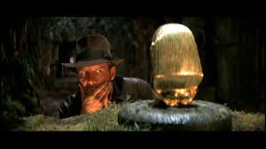
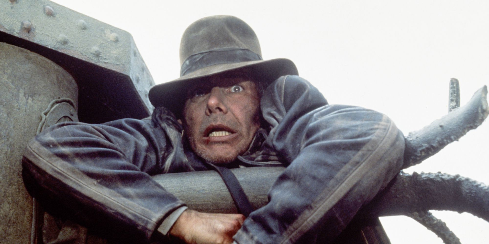

Про Indiana Jones
Індіана Джонс є збірним образом головних героїв пригодницьких телесеріалів і pulp-журналів, які його творці, Стівен Спілберг і Джордж Лукас, дивилися і читали в дитинстві.
Двоє друзів вперше задумалися над створенням такого персонажа 1977 року на Гаваях, де відпочивали після зйомок «Зоряних воєн».
В одній із розмов Спілберг сказав, що хотів би зняти фільм про Джеймса Бонда, але Лукасу не сподобалась ця ідея, він заявив, що у нього «є трохи кращий персонаж».
«Індіана Джонс: У пошуках втраченого ковчега»
П Є першою серією пригодницької кінотетралогії про археолога і шукача пригод Індіану Джонса. Дітям рекомендується перегляд спільно з батьками. Цей фільм досить часто визнавався відомими кінокритиками найкращим пригодницьким фільмом.

ДОригінальний фільм мав продовження: «Індіана Джонс і Храм Долі», «Індіана Джонс і останній хрестовий похід» і телесеріал «Хроніки молодого Індіани Джонса». 18 травня 2008 був продемонстрований четвертий фільм про пригоди відомого археолога «Індіана Джонс і Королівство кришталевого черепа».
...